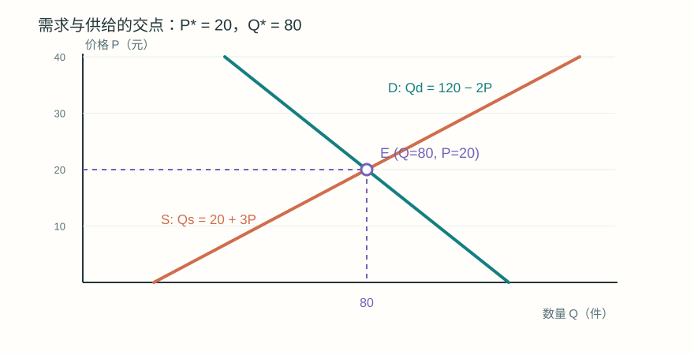
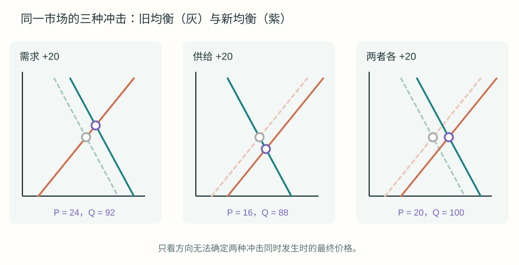

CHAPTER 05 · MICROECONOMICS
市场均衡：价格机制的力量
当买卖双方的数量计划相等，市场模型中的价格便有了一个参照点。
均衡是什么：两边的计划一致
在价格过低时，买家往往想买很多，卖家却不愿提供足够商品；价格过高则可能出现库存。若存在一个价格使双方愿意购买和供应的数量恰好相等，我们称其为市场出清价格。
沿用前两章共同设定的假设线性模型：需求 Qd=120−2P，供给 Qs=20+3P，价格P以元计、数量Q以件计。令 Qd=Qs，可得120−2P=20+3P，整理为5P=100，因此均衡价格P*=20，均衡数量Q*=80。

过剩与短缺为什么形成价格压力？
若价格是30元，需求Qd=60，供给Qs=110，形成50件超额供给。若价格是10元，需求Qd=100、供给Qs=50，形成50件超额需求。在信息足够、价格可以调整的情形下，过剩形成降价压力，短缺形成涨价压力。
| 价格 P | 需求 Qd | 供给 Qs | 供给−需求 | 含义 |
|---|---|---|---|---|
| 10 | 100 | 50 | −50 | 短缺 |
| 20 | 80 | 80 | 0 | 出清 |
| 30 | 60 | 110 | +50 | 过剩 |
价格有调整压力，不等于现实市场瞬间回到出清状态：库存、长期合同、排队、配给、市场力量和监管都可能改变动态路径。尤其在短缺时，需求量不等于已成交量。若没有库存，50件供给无法满足100件需求计划。
比较静态：冲击改变了哪个交点？
需求偏好加强，使每个价格下需求增加20件，新需求为140−2P，旧供给20+3P不变。解得P*=24、Q*=92。另一个情形是成本下降，使供给改为40+3P、需求保持120−2P；此时P*=16、Q*=88。
若需求和供给同时增加20件，那么140−2P=40+3P，得到P*=20、Q*=100。由此可以看见：需求右移通常推高价格、供给右移通常压低价格；两者同时右移时价格方向不确定，需要比较幅度。在此特例中恰好相互抵消。

| 冲击 | 需求函数 | 供给函数 | 新均衡 (P*,Q*) |
|---|---|---|---|
| 仅需求右移20 | 140−2P | 20+3P | (24,92) |
| 仅供给右移20 | 120−2P | 40+3P | (16,88) |
| 两者同时右移20 | 140−2P | 40+3P | (20,100) |
为什么出清不等于公平？
竞争均衡是理解资源如何协调的有力工具，但供需相等并不自动证明公平。完全竞争的效率结论依赖严格条件；外部性、信息不对称、市场势力、公共物品以及收入差异，都可能让出清价格不能反映社会福利的全貌。
“看不见的手”提供了分散决策可能形成协调结果的直觉，却不是每个自利行为必然让所有人变好的承诺。评价市场机制还应分别检查配置效率、外部成本、财富分配和无法支付的需求。CORE Econ 的竞争均衡条件提供了进一步讨论。
自己重新检验价格与数量的关系
交互实验：价格与市场出清
示意函数：需求 Qd = 120 + ΔD − 2P，供给 Qs = 20 + ΔS + 3P。滑块只改变教学假设，不代表实时市场报价。
均衡价格20，均衡数量80。
无 JavaScript 时仍可使用上面的静态图、函数和表格。
市场价如果被限制在P=10而供需函数仍保持原样，短缺多少件？实际成交量一定等于需求100件吗？
展开解析
Qd=100，Qs=50，超额需求50件。若没有库存和额外供货，最多成交50件。愿意购买100件并不代表卖家实际卖出100件。
均衡分析给出变化方向。下一章将进一步研究弹性：为什么不同商品在相同的供求冲击下，价格与数量变化幅度不同？
来源与数值说明
示例参数、表格、交点及 SVG 皆由本项目独立构造并核算，并非现实市场数据，也没有直接复制参考书的插图。概念参考：